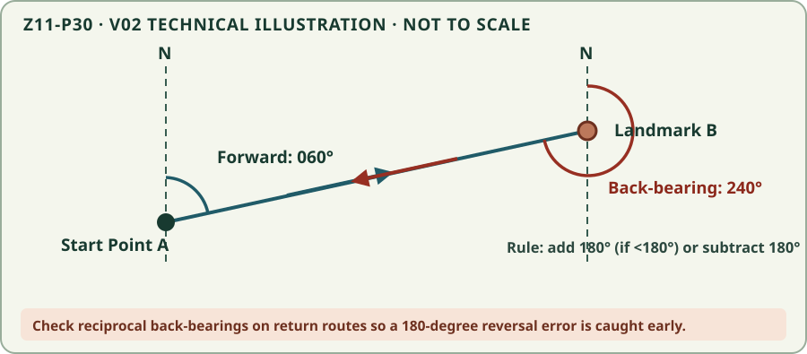

Z11-P30 · Navigation, weather and rescue · New manuscript
Take a field-to-map bearing and verify with a reciprocal back-bearing
Translate a visible real-world landmark direction onto a paper map and catch aiming or declination errors using back-bearings.
When it applies · Identifying distant peaks, towers or lake points and confirming straight travel along a bearing line.
Equipment · Baseplate compass with declination verified and oriented topographic map.

Actions
- Point the compass direction-of-travel arrow squarely at a clearly identified visible landmark, hold level clear of metal and turn the bezel until the north needle sits centered inside the orienting arrow; read the bearing at the index line.[N08, T08]
- Apply your declination conversion (if using a fixed-declination compass) cleanly to transfer the bearing onto the map, keeping the orienting lines parallel to map north meridians while pivoting through the landmark.[T08, N08]
- Calculate the reciprocal **back-bearing** (add 180° if bearing is under 180°, or subtract 180° if over 180°) to look back at your starting landmark and verify you have not drifted sideways.[N08, ED]
Failure recognition · Forgetting to reverse the declination sign direction when switching from map-to-field versus field-to-map bearing conversions.[T08, N08]
Verify · Sight backward from your midpoint toward your starting tree or ridge and confirm the reciprocal reading matches within a few degrees.[N08, ED]
Stop or change course · If forward and back-bearings disagree markedly, check for nearby metal, electronics or iron rock before trusting the line.[N08]
Evidence and editorial notes
- N08 · NOAA NCEI · Magnetic Declination (current web edition)
- Section: Magnetic Declination > Local Anomalies and Compass Interference · Conditions: Using magnetic baseplate compasses near metal, electronics or iron-rich rock
Support: True north, grid north and magnetic north differ by local declination; additionally, nearby phones, vehicles, knives, steel poles and localized magnetic rock (e.g., northern Minnesota iron formations) deflect compass needles erratically.
Limitations: Never assume a compass needle reads true magnetic field while held near gear, vehicles or iron ore. · Conflicting evidence: Aligns with B014-P13 and B014-P14.
Editorial note: Grounds declination conversion, metal-clearance and magnetic-anomaly cards. · Specialist reviewer: Navigation and geophysics safety
Primary source · checked 2026-11-24 - T08 · NOAA NCEI · Magnetic Declination (current web edition)
- Section: Definition and bearing conversion · Conditions: Trip planning with a map and compass
Support: Declination varies by date and geographic position. Determine the map reference and current local value.
Limitations: Outdated map margins can have meaningful declination drift over decades. · Conflicting evidence: None; retained for navigation reconstructions.
Editorial note: Preserved for Z11 continuity. · Specialist reviewer: Navigation and search and rescue
Primary source · checked 2026-11-24
Source lineage · NOAA declination and USGS topo; new manuscript · Classification · New manuscript.